GE Exclusive Use Only
Direction 5670000, Rev# 1
Optima MR450w 1.5T Service Methods
Module Version 10.0, Version Date 1/14/10
GE Exclusive Use Only |
This direction provides the pre-installation requirements and steps for installing the Signa InSite/IIP option. Be sure to read this entire document before you begin the installation. Become familiar with the steps before you begin and contact the Support Center if you have any questions. Be sure to keep this direction as it contains information on the InSite Software hardware removal process (for USA only).
InSite features: There are two methods for connecting a Signa system to InSite. The most common is through Internet Protocol (IP) which runs over a lower software layer called Point to Point Protocol (PPP). PPP emulates an IP connection method to connect hospital networks, Internet access, or another connection method to get to the Internet. Check with your installation coordinator to determine your connection type.
Security: The access is controlled by an encrypted password system called CHAP secret, part of the PPP protocol. The CHAP secret is setup at the first successful InSite connection, and is maintained in the database at the OnLine Center.
Installation: The InSite software is included on the Restricted Service CD-ROM. To enable it, you must select “Configure IIP” from the Install GUI and select the proper modem type. After answering all of the install questions, the OnLine Center must do an InSite checkout to complete the process.
At the time of system install, a unique IP address is needed for InSite. This is done by calling the OnLine Center, and requesting an IP number. This address will be declared in the Support Center's database.
| ||||
| For Modem Systems – The InSite IP address must be different that the host IP address. Failure to do this will result in a Host Monitor Timeout error during system boot-up to applications after an InSite checkout is performed. | ||||
This section explains the items to complete prior to actual install of Signa InSite hardware and software on the system.
Instruct the customer to have a direct inward/outward dial voice grade line installed in the interface operator's room near the Signa operator workspace. The voice grade line interface must use an RJ-11 type phone connector. It is the customer's responsibility to have this phone line properly installed and verified.
Obtain a unique IP address by contacting the site's local system administrator or if one is not available, contact your local support center (refer to Table 1).
The InSite global modems are shipped with the system as catalog number M1000NW. This kit, part number 2245794 only includes a modem. The serial cable and InSite magnets are part of the product.
Table 1: On-Line Center Phone/Fax Numbers
| OLC-AMERICAS | OLC-EUROPE | OLC-ASIA | |
| Phone: | 1-800-321-7937 | (33) 1 3920 0007 | 81-426-56-0033 |
| FAX: | (414) 524-5305 | (33) 1 3070 9970 | 81-426-56-0053 |
Insite Checkout Requirements
The product must be on the completed compatibility list shown in Step of this document.
InSite/iLinq Platform (IIP) software must be loaded. This is done during the restricted software load. The IIP version must be 1.5_1A or greater, to check the version:
Open a C shell from the Common Services Desktop
Type: cd/usr/g/insite
more VERSION
The product must be physically connected to the hospital network (Ethernet cable plugged in).
You need to know the Signa scanner's IP address, and the VPN Gateway address. The VPN Gateway must be determined before an InSite checkout can be completed. The customer's IT department can provide the correct gateway address.
To establish connectivity to GEMS for a checkout, a VPN Gateway must be entered on the scanner. If the Signa scanner's default gateway is not the VPN Gateway, a temporary route to the VPN Gateway needs to be added. At the time of a checkout, add a temporary route using the command below. This route will be removed if the system is rebooted.
Temporary route add command
Log in to the Signa system as Root.
Open a C shell window.
Type: route add -net 150.2.0.0 (gateway)<Enter> (gateway is the hospital gateway IP address).
Route delete command
Log in to the Signa system as Root.
Open a C shell window.
Type: route delete -net 150.2.0.0 (gateway)<Enter> (gateway is the hospital gateway IP address).
This section explains how to install Signa InSite hardware on your system after the pre-install is complete.
Item Description: InSite global modem w/power supply; the cables and cabinet magnets ship with the system.
Part Number: 2245794, Qty: 1
Connect the InSite RS232 cable to the host computer chassis connector. See Table 2.
Connect the other end to the back of the modem.
Connect the phone line cable to the RJ11 jack labeled LINE on the back of the modem.
Connect the other end of the phone cable to the wall jack.
Connect the modem power supply cable to the back of the modem.
| NOTE: | Do not install the covers at this time. The covers are installed after the functional check. |
Table 2: RS232 Cable Connections Run Numbers
| Computer Type | System Type | Run Number |
| Indigo | Lx and older systems | 806 |
| Octane | Lx | 812 |
| HP | Excite, HD, HDx, & HDe, HDv | 1066 |
| THTF | HDsv (Optima MR360 and Brivo MR355) | E3045 |
Illustration 1: Signa InSite Hardware Install Drawing

This section gives a brief description of the service installation and customer applications available with the InSite Interactive Platform.
InSite Interactive supports the following service features:
ProActive Diagnostics (ProDiags)
Modem Configuration
HealthPage
InSite CheckOut
The InSite ProActive Diagnostics feature monitors diagnostically informative parameters of a scanner on a present schedule. If a scanner has InSite remote dial-out capabilities, and is located in a pole that has the networking infrastructure in place, it can automatically dial the Automated Support Center (ASC) to report the test results which can cause a dispatch to be created.
Each scanner has a schedule when testing can be performed. You should determine the normal working hours for the scanner, and when and whether ProActive Diagnostics should be run. A default schedule is supplied and is suitable for most systems.
Both the field engineer and the OnLine Center engineer can command ProDiags to perform these functions:
Schedule tests
Execute tests
Turn tests on and off
Look at test results
Look at the log file
The Health Page task is a ProDiags application that provides quick access to logs and statistics that may be useful during planned maintenance and troubleshooting. The system Health Page contains data gathered over a specified time period. The OnLine Center will dispatch service and retain data for analysis and trending.
The health page report can be acquired from the system in four (4) ways:
Automatically
Remotely - via InSite
On Site - via the Common Services Desktop
E-mail request
The modem configuration is part of the InSite Interactive Platform Configuration tool. This tool allows you to configure and set up the serial port and modem. You must set (or accept the default configuration) for six items to ensure that the configuration is applied:
Dial-out Prefix
Dialing Mode
Modem Type
Country
Serial Port Selection
Serial Port Speed
Illustration 2: Information Tab, Instructions Sub-Tab
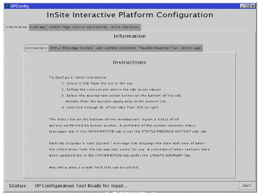
The Information tab contains five sub-tabs. The Instructions tab, Illustration 2, provides information on the IIP Configuration tool. To Configure InSite, select the tabs from left to right, and follow the Instructions for executing each task. When all tabs are complete, exit the tool.
| NOTE: | The Device Connection tab provides the selection of a network connection. If a Modem tab is visible instead of the Device Connection tab, then the IIP software version needs to be upgraded. Contact the beyond modems checkout person to obtain the proper IIP software version. |
Device Connection Tab
This section provides the steps for completing a Broadband Device Connection checkout. See Illustration 3. It is necessary for you to complete the ProDiags and Health Pages, but they are not described in this section.
Illustration 3: Device Connection Tab

The Device Connection Type menu defaults to the “Modem” selection. To configure for network connectivity select[Network] from the Device Connection Type menu. This screen is shown in Illustration 4. It is necessary to define the IP address of the gateway on the network that can connect to the OnLine Center.
Illustration 4: Broadband Device Connection Page
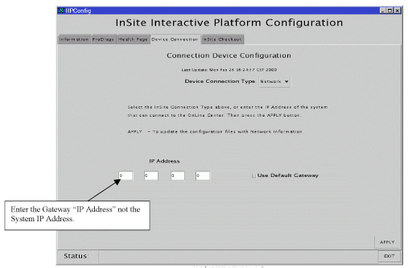
The Network Option in the Device Connection tab, Illustration 4, requires network specific information. Enter the gateway address that will route to the Hospital's VPN appliance. It is recommended to enter the gateway IP address. Do not select “Use Default Gateway”. By specifying a gateway IP address a route will be created back to GEMS address 150.2, after the InSite/iLinq Platform GUI (Graphical User Interface) is complete. If “Use Default Ggateway” is selected the connectivity information may not be saved during a save system configuration procedure. Even if the gateway IP address is the default gateway, enter the address manually to ensure the route is created. After all text is entered, click [APPLY]. This will ping the IP address and, once confirmed, update the .InSiteINFO file. Upon completion of a Broadband InSite checkout, a Saveinfo must be performed. This is essential to maintaining InSite connectivity after later software loads.
InSite checkout is part of the InSite Interactive Platform Configuration tool. InSite checkout allows you to complete the InSite configuration process. You have three options for performing checkout. These options require a system shut down and re-boot. These options are:
Checkout Now
Disable InSite
Auto Checkout (available if /usr/g/Insite/sclink.cfg file exists)
InSite Interactive supports the following new customer features:
InSite Interactive Platform
InSite Interactive Home Page
Contact GE (One Button Touch)
Customer Messages
InSite Interactive features are only available if the customer purchases an InSite Interactive license that includes access to one or more of these features. Standard InSite support remains unchanged.
| NOTE: | The customer features are only supported in English. |
An additional icon/button is on the desktop to allow easy access to the InSite Interactive web-based applications. In addition, the InSite icon displays three pixmap images. See Illustration 5.
| NOTE: | Logic to record InSite Logons will still be available, the current Session Log application remains unchanged. |
Illustration 5: InSite Icons displayed to the Operator

The application startup script performs a check to determine if the InSite Interactive package contains a valid Service License (supplied by the OLC). If the check is successful, the icon is added to the desktop. In addition, during LINUX startup, a script is executed to see if the licenses are valid. If the licenses are valid, the web browser will start during the LINUX Operating System installation as a minimized application. During application startup, the InSite desktop manager icon will be enabled and the web browser will be maximized only within the InSite desktop environment. Regardless of the licenses' validation, the web server is always enabled to allow InSite web server access and functionality.
Illustration 6: InSite Interactive Home Page

| NOTE: | The user interface will vary with different software versions. |
This is the customer's top view of the InSite Interactive Service offerings (see Illustration 6). From this screen, the customer can access services which they are licensed to use. If the customer selects a button for a feature they do not have a license for, or have an expired license, they will be informed of this condition and instructed in how to receive a new license.
Illustration 7: Contact GE Page
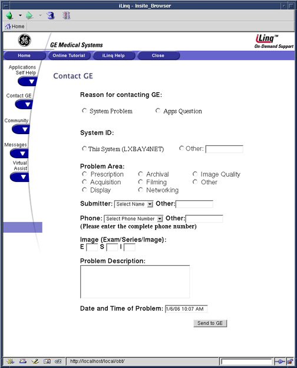
| NOTE: | The user interface will vary with different software versions. |
The customer can enter a problem report and submit it to GE (see Illustration 7). This feature provides an easy way to capture important information which can result in faster repairs. The customer may also use this feature to ask a question of an application specialist. Status on the customer request for assistance will be handled by a return message via the Customer Messages application.
Illustration 8: Customer Messages / Current Mail Page
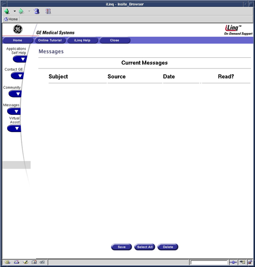
| NOTE: | The user interface will vary with different software versions. |
This feature permits GE to deliver a message to the customer on the product (see Illustration 8). The InSite Interactive feature will notify customers when they have a new message.
The customer can access the Customer Messages area by selecting the InSite button on the desktop, and then selecting [Get Mail Messages] from the main InSite Interactive screen.
Additional features within the InSite Interactive application are being developed, and when they are available, can be deployed by downloading them to the system via the ASC. New features may require additional licenses.
The InSite Interactive software is automatically loaded when the Restricted Service CD is loaded from the Installation GUI. It can also be loaded separately (see OW2SCABE Appendix E). See Illustration 9.
Illustration 9: Installation GUI
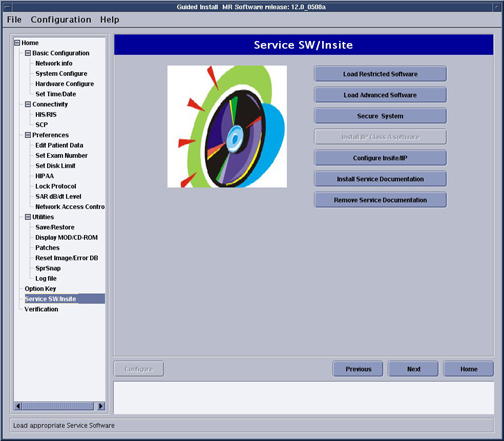
The IIP software can be configured via the Install GUI by selecting [Configure InSite/IIP]. See Illustration 9. Alternatively, it can be started from a command line as follows;
Open a C shell window from the CommonServices Desktop.
Change to root user. Type: su -<Enter>
| NOTE: | You must enter a space followed by a dash. |
Enter the root password.
To start the configuration process, type: “iipadmin config” <Enter>.
The following pages provide screen snapshots and descriptions of the IIP Configuration tool that starts up when the user executes the command “iipadmin config” in a command window, or starts IIP from the Install GUI.
Illustration 10: Proprietary Authorization Tab

The Authorization tab (see Illustration 10) is a security confirmation screen. You are prompted to click on [DECLINE] if not a GE employee, or click [ACCEPT] three times if you are a GE employee.
After you click [ACCEPT] three times, the main tabs are initialized.
Illustration 11: Information Tab, Instructions Sub-Tab
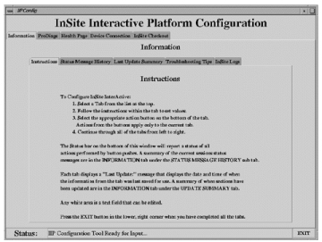
The Information tab (see Illustration 11) contains four sub-tabs. The Instruction tab provides information on how to use the IIP Configuration tool. To configure InSite, select the tabs from left to right, and follow the instructions to execute each task. When all tabs are complete, exit the tool.
Illustration 12: Information Tab, Status Message History Sub-Tab
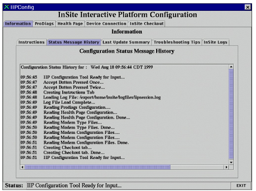
The Status Message History sub-tab (see Illustration 12) provides an up-to-date listing of all the status messages that have displayed in the Status message line at the bottom of the tool window. Text displayed in this window is for the current session only. All status messages are tagged with a time-only stamp. When the IIP Configuration tool is run using the-debug switch, additional messages are displayed here and logged to the /usr/g/insite/logfiles/configdebug.log file.
Illustration 13: Information Tab, Last Update Summary Sub-Tab

The Last Update Summary sub-tab (see Illustration 13) provides information on when each package was last configured.
| NOTE: | On this page, the indication “No File” means that the particular option has not been configured. |
Illustration 14: Information Tab, Troubleshooting Tips Sub-Tab
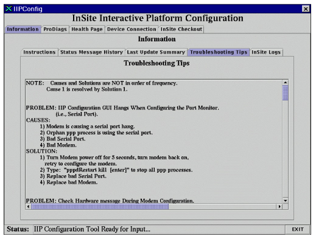
The Troubleshooting Tips sub-tab (see Illustration 14) provides basic problem/cause/solution for InSite-related problems. You can find this information in Section 13.
Illustration 15: Proactive Diagnostics Tab
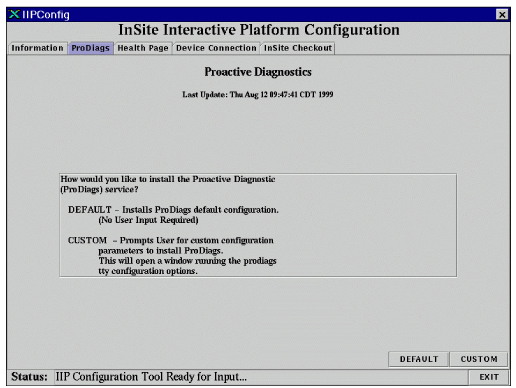
The ProDiags tab (see Illustration 15) is for the configuration of Proactive Diagnostics. Select [CUSTOM] to configure and modify the default ProDiags schedule for the site.
Click on the weekly choice for ProDiags.
Illustration 16: Health Page Tab

The Health Page tab (see Illustration 16) is for the configuration of the Health Page report. Select [DEFAULT] or [CUSTOM] to configure the Health Page report.
Selecting the [DEFAULT] button configures the Health Page with the default schedule file. A valid e-mail address is required in the Enter Address List field for the default configuration. A valid e-mail address is defined as a string in the format name @ location.
The standard format for GEMS e-mail addresses is:
first name.last name@med.ge.com. Be careful to enter a correct e-mail address(es).
A check is made for an “@” only. All e-mail addresses are saved to the /usr/g/config/healthpg.adr file in the format: user #=email address.
Selecting the [CUSTOM] button writes the e-mail address file and generates the custom Health Page sub-tabs. If you have not previously changed the Health Page schedule, a list of planned maintenance (PM) dates is created starting one month from the current date.
Illustration 17: Custom Health Page Instructions Tab

The Custom Health Page sub-tab (see Illustration 17) provides instructions on changing values in the Options and Dates sub-tabs.
Illustration 18: Custom Health Page Options Tab
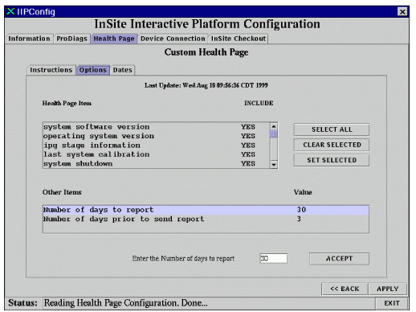
In the Options tab (see Illustration 18), you can configure Health Page contents. Double-click items in the Health Page item list to change from YES to NO or NO to YES. The [SELECT ALL] button will select all of the items. The [CLEAR SELECTED] button will set all selected items to NO. The [SET SELECTED] button will set all selected items to YES.
The Other Items section contains items which are value-based. Click to select an item, then edit the value in the field below. Select [Accept] to change the value in the list. Select [APPLY] to write the values in the /usr/g/w/config/healthpg.cfg file.
Illustration 19: Custom Health Page Dates Tab

In the Custom Health Page Dates tab (see Illustration 19), you can configure Health Page planned maintenance dates. Health Page reports will be generated several days prior to a PM date and e-mailed to the FE.
The Enter Start Date fields will generate a new planned maintenance date list based on the date selected. The [Update List ] button generates the new list and adds it to the Health Page Dates list.
Select a date in the Health Page list and use the [MODIFY] or [DELETE] buttons to change the date. The selected dates display in the Enter Specific Date menus. The Enter Specific Date menus can also be used to add a single date to the list by changing the desired date, then selecting [ADD].
The [APPLY] button must be selected to update the changed dates in the /usr/w/config/healthpg.pm file.
Illustration 20: Modem Device Connection Tab

The Device Connection tab (see Illustration 20) allows you to configure and set up the serial port and modem or network for use with InSite.
To use the modem - Set six items for the configuration to apply: Dial-out Prefix, Dialing Mode, Modem Type, Country, Serial Port Selection, and Serial Port Speed. Indigo computers can only support a maximum serial port speed of 38400. To change these settings:
The default settings for CPU Serial Port Name and CPU Serial Port Speed should be correct, and should not be changed unless troubleshooting. Indigo computers can only support a maximum serial port speed of more than 38400.
Select a Dial-out prefix or enter a site specific one if is not in the list. Dial-out prefixes may be required on some sites to get a line outside of the hospital. The default is “9,1” which is the most common.
Select a dialing mode of Tone or Pulse. Tone is the default.
Select the supported modem type.
Set the Country of the site. “[Default- All Others]” is the default. If the Country is not available in the pull-down menu, then select “[Default- All Others] ”.
To use the network - Select Use Default Network. See Illustration 21.
Illustration 21: Network Device Connection Tab
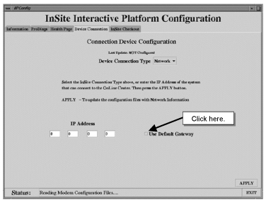
After all selections are made, select the [APPLY] button to set up the serial port and set up the registers on the modem, and store the values to the modem's NVRAM. When the [APPLY] button is pressed, another screen may display for the selected modem type (see Illustration 22).
| NOTE: | You MUST click the [APPLY] button before continuing to the InSite checkout of the Custom Modem Configuration screen. |
Illustration 22: Modem “Readme” Screen (Example is for USR V.34 Selection)
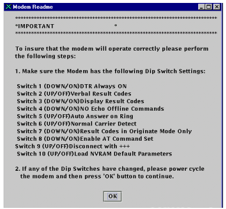
Illustration 23 reminds you to properly configure any switches or other modem parameters and to prepare the modem to accept the programming. Click [OK] to proceed with programming the modem.
Illustration 23: Custom Modem Configuration Screen (Example is for Multitech Selection)

If you need to make modifications (such as specific changes to a modem register or other modem parameter, as directed by your local On-Line Center), you MUST change the Action pull-down to Write to NVRAM. Click [EXECUTE] to ensure that the changed values will be applied to the modem's registers and stored in the modem's NVRAM. This ensures that the changed modem settings will be saved and restored whenever the modem's power is cycled.
To exit this screen and return to the previous Modem Configuration screen, click [BACK].
The Custom Modem tab allows you to modify the setup registers on the modem. Use extreme caution when changing anything in this tab, as InSite may be disabled if improper settings are sent to the modem.
The Register and Register Value fields work as a pair. Select an “S” register to change a value or enter the name of a non-S register to be queried or modified. The Register Value field is where to enter the new value of the register you want to change. If an “S” register is selected from the pull-down menu, a description of that register displays in the Register Description.
Register String is a list of registers and values set in the modem by default, based on the modem type and country. This string updates when a register is modified and the settings have been saved to NVRAM from the Custom Modem tab.
The Action pull-down menu has six actions that you can execute using the [EXECUTE] button:
Update Register
Read Register
Display All
Write to NVRAM
Factory Defaults
Check Modem
Update Register attempts to set the value in the Register field to the value defined in the Register Value field.
Read Register uses the register defined in the Register field and displays the values in the status bar.
Display All opens a window with all the register settings.
Write to NVRAM forces the modem to save the temporary modem settings to NVRAM within the modem. These values in NVRAM are recalled when the modem's power is cycled. This action MUST be selected when changing modem settings, or the next time power is cycled to the modem, it will revert to the factory default settings.
Factory Defaults resets the modem to factory defaults using a hardware flow control template.
Check Modem is a simple check to see if commands can be sent to the modem.
Illustration 24: InSite Checkout Tab

The InSite Checkout tab (see Illustration 24) allows you to complete the InSite configuration process. You have three options:
CHECKOUT NOW
DISABLE INSITE
AUTO CHECKOUT (Requires /usr/g/insite/sclink.cfg file to exist)
The [CHECKOUT NOW] option configures PPP to allow a dial-in connection from the OnLine Center. You must call the local OnLine Center to complete checkout.
During the Checkout process the OnLine Center will ask for the model type. See Table 3 for model type for Signa software configurations.
Table 3: Model Types
| Product Name | GSCC Product Type | GSCC Model Type | |
| Signa Ovation | Lightning | OVATION | |
| Signa Ovation3 (MFO3) | Lightning | MFO3-IIP3 | |
| Signa Ovation Excite (MFO4) | Lightning | MFO4-IIP3 | |
| Signa Ovation Excite (MFO5) | Lightning | MFO5-IIP3 | |
| Signa OpenSpeed (HFO2) | Lightning | LX_IIP2 | |
| Signa OpenSpeed (HFO3) | Lightning | HFO-IIP3 | |
| Signa OpenSpeed Excite (HFO4) | Lightning | HFO4-IIP3 | |
| Signa OpenSpeed Excite (HFO5) | Lightning | HFO5-IIP3 | |
| Signa LX or Horizon HiSpeed / EchoSpeed / SmartSpeed | Lightning | LX_IIP2 | |
| Signa MRi / CVi / CV / NV | Lightning | LX_IIP2 | |
| Signa SP | Lightning | LX_IIP | |
| Signa 3T (VH2) | Lightning | LX_IIP | |
| Signa 3T (VH3) | Lightning | LX_IIP2 | |
| Signa (8.3) | Lightning | LX_IIP2 | |
| Signa (9.1) | Lightning | LX_IIP3 | |
| Signa Excite 3T | Lightning | 3TMGD-IIP3 | |
| Signa Excite (10x) | Lightning | LXMGD-IIP3 | |
| Signa Excite (11x) | Lightning | MGD2-IIP3 | |
| Signa Excite HD (12x) | Lightning | MGD3-IIP3 | |
| Signa HD 7.0T | Lightning | MGD3-IIP3 | |
| Signa HDxt | SIGNA-HDx | _MGD4-IIP3 | |
| Discovery MR750 (20x) | SIGNA-HDv | _MGD5-IIP3 | |
| Discovery MR450 | SIGNA-HDv | _MGD5-IIP3 | |
| Optima MR450w | SIGNA-HDv | _MGD5-IIP3 | |
| Optima MR360 | Signa-HDv | SV-IIP3 | |
| Brivo MR355 | Signa-HDv | SV-IIP3 |
During the checkout process, the OnLine Center will download a sclink.cfg configuration file and run ConfigLink to configure PPP and allow only the OnLine Center to be able to dial and login to the site. A checkout must be done for each mobile system ID that has a phone connection. Each mobile system has a unique sclink.cfg file. After the checkout is complete, re-boot the computer to make sure there are no system issues.
Select [DISABLE INSITE] to disable the serial port for the modem for a checkout at a later date. All previously saved information is retained. If you select this option, you MUST return to the IIP configuration tool, select the [APPLY] button on the Modem tab, and then select [CHECKOUT NOW]. After the checkout is complete, re-boot the computer to make sure there are no system issues.
The [AUTO CHECKOUT] option can only be used if a sclink.cfg file exists, (i.e., the site has completed a checkout using the [CHECKOUT NOW] button at some previous time). AUTO CHECKOUT will run CnfigLink, dial the AutoSC, queue a task with the AutoSC to dial back, and wait for the AutoSC to dial back and leave a file /tmp/autocheckout. The IIP configuration tool waits only 10 minutes for the file. Typically, the AutoSC will call back in 5-6 minutes.
When the dial-out test is in the process of connecting to the AutoSC, the IIP configuration GUI will not update and may seem locked up until the connection to the AutoSC is completed or the connection times out.
Illustration 25: Configure InSite Now Requester

When you select [CHECKOUT NOW], the Configure InSite Now (Illustration 25) dialog box displays the option to run a dial-out test upon completion of the InSite Checkout process. If you select [OK] before the InSite Checkout process is complete, the IIP configuration tool watches for an ~insite/sclink.cfg file. The IIP configuration tool waits 10 minutes for the sclink.cfg file to arrive. When the file is received, the dial-out test starts. This test ensures the dial prefix provided and the number of the OnLine Center are correct. This also ensures ProActive Diagnostics messages and [Contact GE] requests can be sent to the OnLine Center. After the checkout is complete, re-boot the computer to make sure there are no system issues.
Illustration 26: Configure InSite Later Requester

When you select [DISABLE INSITE], the Configure InSite Later (see Illustration 26) dialog box displays. The serial port is disabled and the IIP configuration tool will exit after you select [OK].
You MUST rerun the IIP configuration tool at a later date, click [APPLY] on the Modem tab, and then click [CHECKOUT NOW] to complete the InSite configuration.
Illustration 27: Exit Confirmation Requester
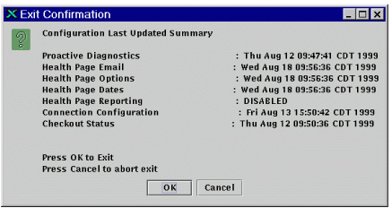
The Exit Confirmation (see Illustration 27) dialog box displays when you click [OK] in the lower left of the IIP Configuration tool window.
A Last Update summary is provided. At this point, if you configure all InSite functions, a valid date/time displays for each function. If any function shows “NO FILE”, that function was not properly configured.
Click [OK] to exit the IIP configuration tool or click [Cancel] to return to the IIP configuration tool.
The configuration files for class M software and InSite features are saves to MOD as part of the SaveINFO process.
Since the files necessary to back up a system prior to update or reload are dynamic, InSite Interactive can be backed up by performing Save INFO from the installation GUI.
The type of files saved are: the license files, the setup files for the modem connectivity, the configuration settings for the web server, the customer messages files, reports, and the identification of download software packages.
Any updated or downloaded software packages will not be included in the backup. In order to restore these downloaded files, an update request must be made to the OLC following a restore.
To remove the class M software applications from the system, perform a Secure System from the Install GUI under the Load Services/PictureThis/IIP tab. See Section 6.
If you encounter any problems while installing the IIP software package, or while configuring InSite Interactive, refer to the flowcharts and additional information in this section to determine and correct the cause of your problem.
The following flowcharts should be used to troubleshoot IIP problems.
Illustration 28: Configuration Fails-Flowchart
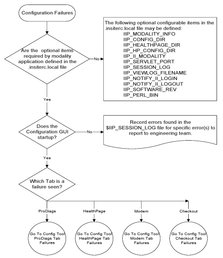
Illustration 29: Config Tool ProDiags Tab Failure-Flowchart
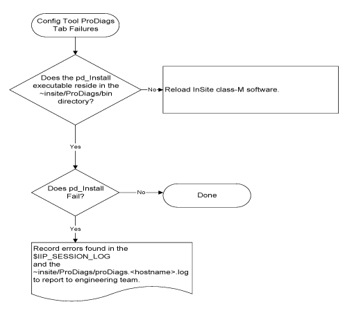
Illustration 30: Config Tool HealthPage Tab Failures-Flowchart
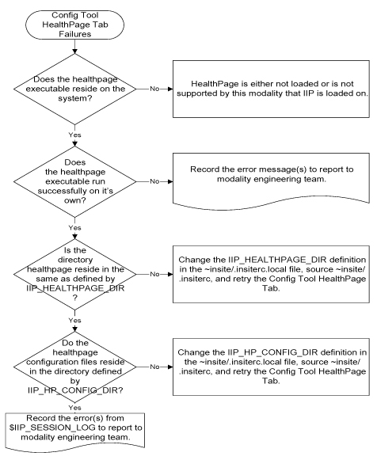
Illustration 31: Config Tool Modem Tab Failures-Flowchart
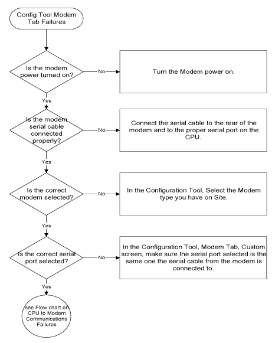
Illustration 32: Config Tool Checkout Tab Failures-Flowchart
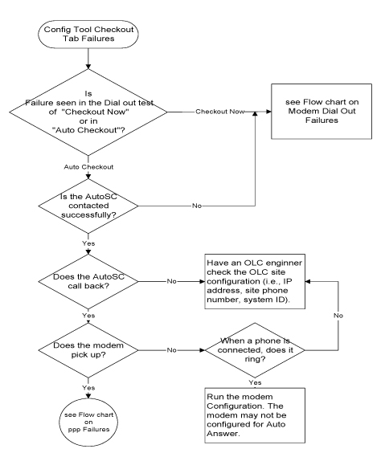
Illustration 33: Communications Between Modem and CPU Failures-Flowchart
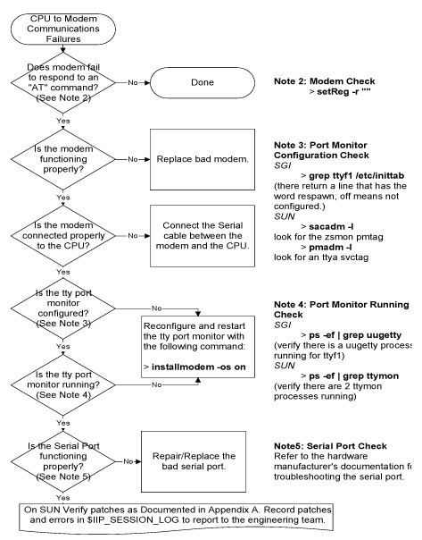
Illustration 34: PPP Failures-Flowchart
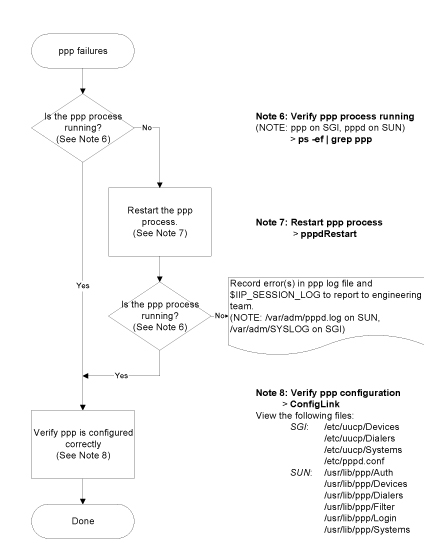
Illustration 35: Modem Dial-Out Failures-Flowchart
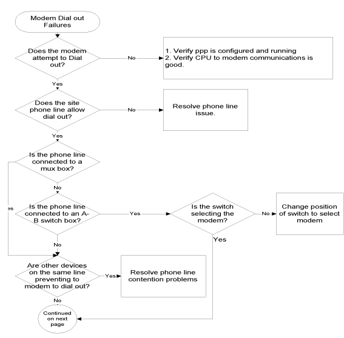
Illustration 36: Modem Dial-Out Failures-Flowchart (continued)
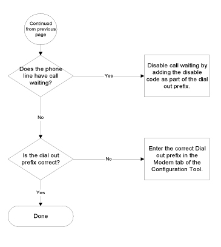
Illustration 37: Web Server Problems-Flowchart
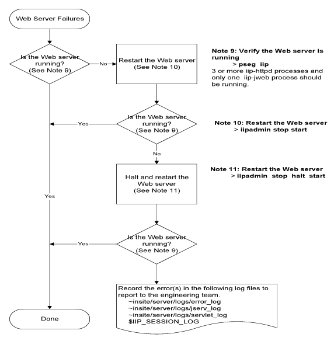
Illustration 38: Web Applications Won't Run
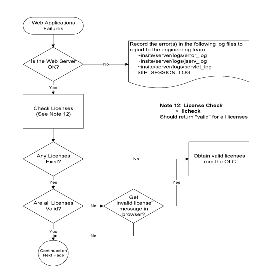
Illustration 39: Web Applications Won't Run (continued)
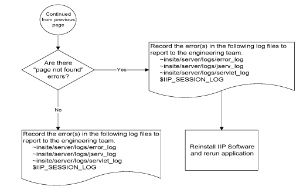
The InSite Dial-in Security feature is for scanners that have optional InSite remote dial-in capabilities. This feature provides two levels of security:
The CHAP encryption algorithm.
A log-in/password for all accounts.
The On-Line Center (OLC) engineer will log in using the InSite Dial-in Security feature to call scanners in the field. If the scanner detects a failed log-in, it automatically generates an e-mail notice to the Automated Support Center (ASC).
To list all failed log-ins, type lastfail<Enter.>
To list failed log-in since a given date, type lastfail, followed by the date or time as in a Unix date command:> lastfail Tue Dec 29 14:40:04<Enter.>
The InSite Proactive Diagnostics feature is designed for scanners that have InSite remote dial-in capabilities. The Proactive Diagnostics feature automatically performs diagnostic testing of the scanner on a pre-set schedule . The scanner automatically dials the automated support engineers at the OnLine Center.
Each scanner has its own test schedule. You should determine the normal working hours for the scanner, and when and whether proactive diagnostics should be run. A default schedule is supplied and should be fine for most systems. Most of the tests may run in the background while the operator is scanning.
Select the dial-out codes for calling the Automated Support Center (ASC). For example, find out whether or not you need to dial 9 for access to an outside phone line. The actual phone number for the ASC is downloaded to the scanner during InSite checkout.
Both the filed engineer and the OnLine Center engineer can use the prodiag command to perform these functions:
Schedule tests
Execute tests
Turn off or on
Look at test results
Look at the log file
All of these tests may run during normal system operation and should have no effect on the scanner. A default schedule is provided for these tests. The default schedule should be fine for a site, provided the OC is not shutdown or at the boot level. The schedule may be changed.
ChkLogs: informs the ASC when selected error messages occur in specific log files.
flog: informs the ASC when there have been five attempts to log in with the wrong password.
IIP_DialPrefix: checks system log files for errors.
IIP_Housekeeping: cleans up the IIP log files.
PassChg: informs the ASC when an important password has changed on the system.
dial_out test: dials the ASC to verify if the out-going modem connection is working.
helathpg: summarizes several selectable system performance parameters. Presents notes from the users.
pd_ASC_Notify: calls the ASC when there is information to send.
pd_Housekeeping: deleted older files in the prodiags directory, trims the prodiags log.
slprune: prunes the log report.
It is recommended that pd_ASC_Notify runs hourly.
It is recommended that pd_housekeeping, flog, Chklogs, IIP_DialPrefix, IIP_Housekeeping, slprune, and PassChg should be run daily.
The task dialout_test should not be scheduled because it is intended to be run only as part of modem checkout.
This section discusses the prodiags tool. You can use this tool to modify the schedule or look at the results. InSite can also use this tool. To start the tool, log in as root by typing (su -<Enter> and the root password), and then type: prodiags<Enter>. A menu with these options displays:
View Log
This displays the prodiags history log, a record of what tasks prodiags started and their success or failure. This log gets automatically pruned so that it will never grow beyond a present size. When the log is pruned, the earlier entries are deleted.
View Results
This allows you to see the result files from a specific task. First, select the task that you are interested in, and then select the proper result file. Some tasks do not create result files, so this option will say that no results are available. Note: to save disk space, prodiags automatically deletes older result files. You can also delete result files be selecting the remove result option from the utilities menu.
Execute a task
This option allows you to execute a test for a prodiag task immediately. Normally the task is scheduled to execute at a specific time in the future. When you select this option, select a task from the list. The task will run to completion. You won't see any output from the task while it is running, because the tasks are designed to run without human activity.
Schedule Management
This options allows you to view or modify the time when tasks are going to run.
View Schedule-- Shows current schedule.
Modify Schedule-- Allows you to change the time for a task. For a background task, you can change the number of times a task runs (iterations), the time the task starts, and the day of the week that the task runs. You may also specify hourly or daily for the tasks to run. For intrusive tasks, you can change the time slot wen the task runs. You set up the time slots on the Define TimeSlots menu. (A time slot is a period of time when the system is supposed to be idle).
Add task to schedule-- Allows you to put in another instance of a task to a schedule. You can have a task scheduled to run several times, such as Mondays and Fridays. Enter the same information as when you modify the tasks. Note: when adding an intrusive task, first define the time slot, and then add the task.
Remove task from schedule-- Allows you to remove a task from the schedule. (The task remains on the disk, so it can be added at a later date if desired).
Define time slots-- (Scanner idle time)-- Allows you to set up time slots when the scanner will be idle, modify those slots, remove those slots, and deactivate those slots.
Modify time slots-- Select this to modify or add a new time slot. Select a time slot to modify or “new” to define a new slot. You will be asked for the start and end time of the slot.
Activate/Inactivate-- An active time slot will execute. An inactive time slot will not run. You can deactivate a time slot if you want to keep the tasks in that slot defined, but you don't want the slot to run. For example, if the schedule at the site temporarily changes.
Delete a time slot-- This removes the time slot from the schedule.
Utilities--
These are additional tools for expert users to manually prune or delete files (if you need disk space immediately), install a new task, or remove an existing task, or view configuration files.
Table 4: Utilities
| View task info | shows configuration information for the task |
| View config file | shows configuration information for the prodiags tool |
| Install a task | install a task that was loaded by a patch tape or a software download |
| Setup a task | add or delete messages to check |
| Remove a task | deletes the task from the disk |
| Prune log | manually prunes the log |
| Prune all results | manually prunes results for all tasks |
| Prune results for task | prunes result for a specific task |
| Delete results | removes result files from the disk |
The Health Page report provides quick access to logs and statistics used during planned maintenance and troubleshooting. It contains a collection of logs and statistics, gathered over a specified time period (typically 30 days.) The system automatically generates the Health Page report and mails it to up to ten users, per a configured schedule. Schedule a Health Page report generation every 30 days, or customize the schedule to the system planned maintenance dates.
Configure the Health Page during IIP Configuration. Once you install the Health Page, the system automatically mails the reports to the designated addresses, and requires no additional user interaction. The Health Page also has a Customer Service Note Pad to allow them to create messages for the FE. This feature can be used to give the FE a reminder of items to check on the scanner.
The system generates the report three days prior to the customized dates, in order to mail out the report in time for the planned maintenance. If the scanner is down during the scheduled reporting time, the system mails the report as soon as it is back up. If you chose to customize the schedule, and all the dates you entered have passed, the system automatically generates the report every 30 days, until you enter new dates into the schedule.
In addition, you may generate the Health Page report by sending an e-mail request to the Automated Support Center, asking them to send a copy to you. The ASC also retains a copy of the full report for future trending purposes.
Use the Health Page tool to set the content of the report, the schedule for sending it, designate the report recipients, and generate or view a report. The Health Page tool is available on the Common Services Desktop under Utilities. Remote users can also use the Health Page command.
The Health Page report contains the following information for a specific time span (typically 30 days.)
System Hardware and Software Configuration: Includes the network addresses, software revisions, system ID, hospital name.
Number of computer reboots: The number of times the OC software was restarted and the dates of the last five system reboots.
Number of TPS resets: The number of times scan hardware required a reset, and the number of times the reset failed.
Notes for Service: Notes that InSite added to the message log or customers added to the message log, to inform you about problems that arose since the last report.
Selected errors from Other Logs: The results of a search of the /var/adm/messages logs failures and panics. The last ten are displayed.
Table 5: Other Log Errors
| Error | Description |
| Applications Core Files | A list of core files |
| Temperatures | Bore temps |
| Disk Usage | Disk usage per partition |
| MPG Stage File | Letters added to the ipg_stage file |
| Last Service Test Run | SPT, TLT, RFT, etc |
| Disk Full Errors | Disk full errors |
| Prescan Failures | Number of APS failures |
| RF Faults | Number of RF amplifier faults |
| Gradient Errors | Number of Gradient errors |
| PSD Errors | Number of psd generated errors |
| System Health | System health check |
To access the Health Page report:
Automatically
Program the scanner to automatically create the Health Page report, per the schedule entered during installation, or at a later time. The report is emailed to the configured addresses. You can select and view the report in the Common Services Desktop under the Utilities menu.
The automatically generated report covers the time interval since the last report.
Remotely - via InSite
If you want immediate access to the Health Page report, generate it from the scanner by opening a C shell window, and typing healthpage<Enter>. (It can take up to 6 minutes for a full report.) Tthe report displays on the screen.
To override the customized report content and display the full report, type healthpage -f<Enter>.
To display the previously generated report, type healthpage -s<Enter>.
The manually generated report covers the preceding 30 days (unless you configured more or fewer days).
On Site - via the Common Services Desktop
If you want immediate access to the Health Page report, generate it from the scanner.
On the Common Services Desktop, under Utilities, select System Health Page. This brings up the GUI version of the Health Page tool.
Online - via WWW
You can view the current healthpage report by accessing the “Mdex Drag-on tool": http://olcweb.olc.med.ge.com/cgi_bin/ss/dragon/dragon.cgi?tool_name=healthview.
From the Common Services Desktop, select Utilities, highlight Health Page, and click [Start].
The tool has three menu items: Exit, Report, and Configure. See Illustration 40.
Illustration 40: HealthPage GUI

The Exit option quits the tool.
The Reports menu lists the following options:
Custom Report
Full Report
Last Report.
The Configure menu lists the following options:
Report Content
Schedule
Email Addresses
Enable/Disable Health Page
You can access the Health Page remotely through a C shell interface using the following procedure:
On the host monitor, move the mouse cursor over the desktop and. right-click to access the menu.
Select Service Tools and then Command Window to start a C shell window.
Type: su<Enter>.
Enter the root password. The default is: operator<Enter>.
The following commands can be used in the C shell window:
healthpage<Enter>
Runs the Health Page option, generates the customized report and displays it on the screen.
health page -q<Enter>
Runs the Health Page option, generates the customized report, but does not send the report to the screen.
healthpage -f<Enter>
Runs the Health Page option, generates the full report and displays it on the screen.
healthpage -v<Enter>
Displays the latest Health Page report.
healthpage -d<Enter>
Runs the Health Page option, generates the customized report and the trending report, but does not send the report to the screen.
healthpage -h<Enter>
Displays usage.
healthpage -c<Enter>
Configures the Health Page.
healthpage -on<Enter>
Opens the Health Page.
healthpage -off<Enter>
Closes the Health Page.
You can customize the content of the Health Page report by turning some logs on or off, specifying the e-mail addresses to use, and setting the schedule.
During IIP configuration, the system prompts you for information to configure the report. The default values and the answers gathered during installation should be sufficient to run the report.
After installation, you can modify the Health Page configuration by typing healthpage -c<Enter> to display the following menu:
Configuring Health Page...
Health Page Configuration Main Menu
(P)M Schedule
(E)mail list
(R)eport configuration
(Q)uit
Type P or p to enter or modify dates to generate the report
Type E or e to enter or modify the list of people who will be mailed a report
Type R or r to modify the report configuration
Type Q or q<Enter> to quit
Type P from the Health Page Configuration main menu to display the following configured planned maintenance schedule. The system generates a Health Page report three days prior to a planned maintenance date. You do not have to enter planned maintenance dates; you can accept the default schedule of every 30 days.
Configured planned maintenance Schedule
(E)dit/Add
(D)elete
(Q)uit
Type E or e to enter or modify dates to generate the Health Page report
Type D or d to delete dates
Typq Q or q to quit
If you type E, the system displays all of the currently configures dates, and then prompts you with each of the previously configured dates. For example:
The system displays all of the currently configured dates, and then prompts you with each of the previously configured dates. For example:
planned maintenance date [05/16/99] :
Press [Enter] to keep this date or enter a different date.
After the last available date, the prompt changes to:
PM date [new date] :
Type in the new date or press [Enter ]to exit.
You may enter as many dates as you want.
If you use the d command, the system displays each of the previously entered dates, and prompts you to keep or delete it.
Display the Health Page Configuration main menu, and type e to change the e-mail address(es). You can send the report to up to ten addresses. Enter the addresses during IIP Configuration, and use this command to change them.
You must enter the full e-mail address. Otherwise, the system cannot deliver the mail.
The system displays the list of current e-mail addresses, and the following selections:
(E)dit/Add
(D)elete
(Q)uit
Type E or e to enter or modify the e-mail addresses.
Type D or d Enter to delete addresses.
Type Q or q Enter to quit.
If you type E , the system displays each of the previously entered addresses. For example:
Example: name@ge.com
Enter an address or press <Enter> to keep the current value.
address [john.smith@med.ge.com] =
Press <Enter> to keep this address, or enter a different address.
After the last available address, the prompt changes to: addresses [new addresses] :
Type the new addresses, or press <Enter> to exit. You can enter up to ten addresses.
If you type D , the system displays each of the previously entered addresses, and prompts you to keep or delete it.
If you configure the report during IIP configuration, you do not have to modify it.
The system uses your selections during automatic report generation.
Type R to display the following menu:
Number of days to report? 30
Number of days prior to send report? 30
Include system software version? Y
Include operating system version? Y
Include ipg stage information? Y
Include last system calibration? Y
Include system shutdown? Y
Include system reboot? Y
Include system SCSI errors? Y
Include system SIMM errors? Y
Include system graphics errors? Y
Include system tn_lib errors? Y
Include applications core files? Y
Include debug applications core files? Y
Include disk usage/free information? Y
Include last time disk full information? Y
Include magnet bore temperature information?
Include tps reset information? Y
Include prescan failure information? Y
Include rf fault information? Y
Include gradient errors? Y
Include PSD errors? Y
Include notes for Service? Y
Include system health check? Y
Include transient noise filter? Y
'q' to quit Enter Option:
Select the options you want to change. Type q to exit this menu.
The Service Notepad is a simple line editor accessible through a user interface on the error log used to add comments to the error log. To access the notepad:
Click on the “Error log” arrow shown in Illustration 41. The notepad icon displays as shown in Illustration 42.
Click on the notepad icon, and the notepad editor user interface displays as shown in Illustration 43
After a message is entered by the operator and save is selected, it will be stored into a message log file to be retrieved by the Health Page. It will be recorded as a message from the operator.
Illustration 41: Error Log Entry
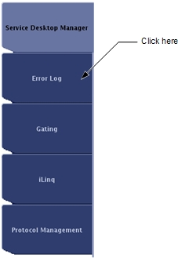
Illustration 42: Notepad Icon

Illustration 43: Notepad User Interface

The message in the error log will look like this;
Fri Aug 27 09:50:22 1999 Error: 0
Host: lx-bay11b Process: UNKNOWN
File: Notepad.c Line: 43
This message was added by the operator by the OPERATOR to report on a problem:
The message the operator types will be there.
The Service Notepad can also be used to leave messages from InSite or from field engineers. Table 6 shows the syntax to be used in a command line window to leave messages from the operator, InSite, and the FE respectively.
Table 6: Notepad Options From Command Line
| Command Line | Mesage Type | Log Entry |
| SvcNotepad -o | Operator message | OPERATOR |
| Notepad | Operator message | OPERATOR |
| SvcNotepad -i | InSite message | InSite |
| NotePad -SL | Service message | Service |
When InSite connects, a message is posted to the current messages screen.
If the system has the optional InSite Interactive license installed, the InSite icon on the desktop will also change.
Modem security is designed in the system such that only the PPP/Chap connection is available. In the event that there is a problem with the PPP connection, a Modem Back Door has been included. The Modem Back Door was designed to be controlled by the customer. If the PPP connection fails, the OLC walks the customer through the steps; the OLC then dials the site (using a non-PPP connection) and enter a username and password. When the Modem Back Door opens, the OLC has ten minutes to connect. Once connected, the OLC or customer can close the back door and the current connection will remain intact. Note that both the opening and closing of the back door generate an attention window indicating the state of the Modem Back Door. It is important to have the operator's approval before changing the state of the back door.
The OLC should walk the customer through the following steps:
Select the Common Services Desktop.
Open a C shell window.
Type: mbd open<Enter>.
Note that an attention window displays indicating that when the customer completes these steps, the OLC has ten minutes to connect to the site.
The OLC should dial the site (using a non-PPP connection) and enter a username and password. Once in, the OLC or customer can close the back door using the following steps:
Type: mbd close<Enter>.
Note that another attention window displays to the operator.
The tool is located in /usr/insite/bin. Entering just the tool name will display both the syntax and an example:
{insite@mr}[4] mbd<Enter>.
Syntax: mbd [-h|help|info|status|open|close]
Example: mbd info
MBD Tool info
Entering the example will display information about the tool:
{insite@mr}[5] mbd info<Enter>.
Modem Back Door Script
This GEMS product was designed with strict modem security. Normally modem access is disabled unless InSite is purchased. If InSite is installed, ONLY the InSite user/password has access; in addition, a second level of security challenge must be passed. This double level of security improves the protection of the system.
This script was designed as a precautionary measure. If InSite has a problem connecting, the customer can run this script to open the modem to a single level of security for a few minutes; i.e.: a caller must connect within a few minutes and pass the InSite user/password challenge -- the second-level challenge will not be issued.
This tool puts control of the modem back door in the customer's hands.
Disclaimer: GE Medical Systems has provided the best measures it can for modem security; it has no control over third party or client system administrator's modifications. Ultimately, security lies in the hands of the customer.
If you have not already done so, please read the 'help' description by typing: mbd help
### The current Modem Back Door status is: 'CLOSED'
MBD Help
Entering the help command will display the help description:
{insite@mr}[6] mbd help<Enter>
Modem Back Door Script
Syntax: mbd [-h|help|info|status|open|close]
Example: mbd info
-h ....... Display this help menu.
help ..... Also, displays this help menu.
info ..... Describes this tool.
status ... Displays the current Modem Back Door status (ie: opened/closed).
open ..... Opens the Modem Back Door.
close ..... Closes the Modem Back Door.
| NOTE: | The 'open' command opens the back door and creates a job to close the back door after 60 seconds. |
If you have not already done so, please read the 'info' description by typing: mbd info
### The current Modem Back Door status is: 'CLOSED'
The back door needs to be manually closed (using the mbd close command) if the system loses power or is rebooted prior to execution of the automated close.
MBD Tool Status
Entering the mbd status command displays the current state of the modem back door.
{insite@mr}[7] mbd status<Enter>
### The current Modem Back Door status is: 'CLOSED'
MBD Tool Open
Entering the open command will open the Modem Back Door for 10 minutes and display an attention window to the operator.
{insite@mr}[8] mbd open<Enter>
Opening the Modem Back Door ...
(The back door will remain open for 10 minutes).
### The current Modem Back Door status is: 'OPENED'
The back door remains OPEN if the system is reset or loses power prior to the automated close; if this occurs, the customer should manually close the back door after the reboot.
MBD Tool Close
Entering the close command will close the modem back door and display an attention window to the operator.
{insite@mr}[9] mbd close<Enter>
Closing the Modem Back Door ...
### The current Modem Back Door status is: 'CLOSED'
InSite kit software disconnect and InSite hardware removal processes are driven by equipment upgrade, contract terminations, or warranty expirations without a follow-on contract
It is the responsibility of the Area Service Manager or designate to proactively monitor expiring service contracts, equipment warranties and upgrade installations of InSite entitled sites to determine whether the InSite kit should remain installed or be removed.
First determine whether the InSite hardware is GEMS owned or customer owned by using Table 7.
Table 7: Determining if InSite Equipment Belongs to GE or the Customer
| Customer Owned | GEMS Owned | ||
| Systems that have a modem kit that belongs to the customer (e.g, IIS,MR, Nuclear Genie, or any system shipped with InSite @ Install | Systems that have an InSite Kit which is GEMS owned property. | ||
| For kits being removed*, if another site has been identified for reinstall of the InSite hardware, fill out the email common form “InSite Deinstall/Reinstall” with the appropriate information. When the paperwork is processed, the database will be updated accordingly. | ||
| The FE is required to notify the OLC of the InSite form, “Disconnect InSite” and supply required information. The OLC Entitlement focal point will then update the database accordingly. | If no new site has been identified to re-install* the InSite hardware, fill out the e-mail common form, “InLink Kit De-install” with appropriate information. When the paperwork is processed, the databases will be updated accordingly. | ||
| * In order to minimize any confusion or delay in service to our customers, please do not send or reinstall the removed kit anywhere until you have followed the procedure outlined above. | |||
| When removing InSite hardware, All kit parts, including the modem, MUST stay together. This decreases our rebuild cost and simplifies internal tracking processes. |
Common forms on Microsoft Exchange can be found in Public Folders/All Public Folders/Medical Systems/Americas/Forms/Common Forms. Be sure to respond to the e-mail address at the bottom of the form.
List of Terms
AutoSC - Automated Support Center. The automated support center accepts incoming requests from ProDiags or calls out to sites to gather information.
CPU - Central Processing Unit.
daemon - Disk And Execution Monitor. A UNIX process that continuously runs to monitor or process requests or commands of a specific type.
GUI - Graphical User Interface.
HTTP - Hypertext Transfer Protocol. Advanced protocol for the exchange of hypertext documents across the Internet, with destinations of all internal and external hyperlinks included.
II - InSite Interactive. This is the big program. Parts include the InSite Interactive Platform, customer applications provided by modalities, and applications and reports provided by the OnLine Center.
IIP - InSite Interactive Platform. This includes InSite connectivity, Proactive Diagnostics, Web Server, Web Browser, and Customer Applications.
IP - Internet Protocol. A layer-three protocol used in a set of protocols to support a network. IP provides a connection-less datagram delivery service for transport layer protocols such as TCP.
OLC - OnLine Center.
PPP - Point-to-Point Protocol. A TCP/IP protocol used over a modem connection.
ProDiags - Proactive Diagnostics. A GEMS proprietary tool that runs small diagnostic programs to proactively identify a potential site problem. ProDiags notifies the OLC when a diagnostic identifies a "known" error.
SGI - Silicon Graphics Inc.
TCP - Transmission Control Protocol. TCP is the virtual circuit protocol of the Internet protocol family. It is a byte-stream protocol layered above the Internet Protocol (IP).
grep uugetty /etc/inittab
SGI command to determine the state of the port monitor.
Sample Output:
# for ports with modems. See the getty(1M), uugetty -Nt 60 ttyf1 dx_115200 # Port 1 PPP (2)
setReg -r
InSite command to see if the modem is alive; returns K on success.
licheck
InSite command to check license status of II applications.
Sample Output:
| bad.iip_obt: Not Valid: Hash check failed | Indicates file changed or file not for that machine |
| iip_cmesg: Valid | |
| iip_miia: Valid | Indicates License is good |
| iip_obt: Valid | |
| serviceHistory: Not Valid: Expired | Indicates license expired, past date limit |
| systemUsage: Not Valid: Expired |
You might also see a “java.net.UnknownServiceException: no content-type” message. This message indicates the web server is not running.
InSite Interactive Command Options: 
| NOTE: | Causes and solutions are NOT in order of frequency. Cause 1 is resolved by Solution 1. |
Causes:
Modem is causing a serial port hang.
Orphan PPP process is using the serial port.
Bad serial port.
Bad modem.
Solution:
Turn modem power off for five (5) seconds, turn modem back on, retry to configure the modem.
Type: /pppdRestart kill<Enter> to stop all PPP processes.
Replace bad serial port.
Replace bad modem.
Causes:
Modem is connected to a different serial port.
Bad modem to CPU serial cable.
Modem is not turned on.
Modem is off the hook (i.e., connected to OnLine Center).
Bad modem.
TTY port not configured correctly.
Solutions:
Connect the modem to the correct serial port.
Replace the serial cable between the modem and the CPU.
Turn on the modem.
Press the button on the front of the modem to disconnect.
Replace the modem.
Start the IIP configuration tool, and click [APPLY] on the modem tab.
Causes:
Modem is at unusual factory settings or
went through a modem configuration as a USRobotics modem
Solutions:
Need to reset DCD to normal before configuring the modem.
To do this, follow this procedure:
Behind the Motorola modem front panel, press the Return key (diagonal arrow) until you see “Disconnect T/D?”
Select the down arrow until you see Terminal Opts.
Select the right arrow button until you see DCD= 'value' this must be “Normal”, otherwise,
Select the down button until the display reads, DCD = Normal.
Press< Enter>.
Press the Return key (diagonal arrow) until you see “Disconnect T/D?”
Re-configure the modem using the IIP Configuration GUI.
Causes:
Modem is not turned on.
Phone line to modem is disconnected or in the wrong jack.
Modem to CPU serial cable is not connected.
Bad modem to CPU serial cable.
InSite user password has changed.
CPU serial port is bad.
PPP deamon is not running.
Solutions:
Turn on the modem.
Connect the phone line to the port labeled \Jack\.
Connect the cable between the modem and the CPU.
Replace the serial cable.
Verify the phone line used by InSite is functional.
Call the OLC to update the InSite password in the database.
Run the command \pppdRestart\ as root.
Causes:
Wrong dial-out prefix.
Wrong dial-out phone number.
PPP is running, but is incorrect or missing.
Solutions:
Change dial-out prefix in the IIP configuration tool.
Call the OLC for an InSite checkout.
Causes:
Web browser not responding to request or actions.
Web browser at an unknown location and can't get to home page.
Web browser distorts the pages.
Solutions:
ALL) Close the current web browser and start a new with the command: insite_browser
Causes:
New files added under the ~insite/classes/com directory tree.
Too many IIP-HTTP processes running.
Web server cannot find pages on the system.
Abandoned HTTPD processes.
Solutions:
ALL) In the ~insite/server directory, run the command: \iipadmin stop halt start\
Causes:
License for an application does not exist.
License for an application is invalid.
License for an application has expired.
Solutions:
ALL) Call the OLC to refresh applicable InSite Interactive licenses
| NOTE: | Use \viewlog\ fund in the ~insite/bin to view these logs |
| Error log name | Error log purpose |
| $IIP_SESSION_LOG | General InSite error log |
| ~insite/logfiles/configdebug.log | Config tool debug log |
| ~insite/server/logs/access_log | Web server access log |
| ~insite/server/logs/error_log | Web server error log |
| /var/adm/SYSLOG or /var/adm/pppd.log | ppp error log |
| Command | Command Purpose |
| iipadmin config | start InSite Configuration GUI |
| iipadmin config -debug | start InSite Config GUI and create debug log |
| iipadmin config -tty | InSite Configuration in tty mode |
| iipadmin stop start | stop then restart web server |
| insite_browser | start an InSite Interactive browser |
| viewlog <logname> | view a log with the view log utility |